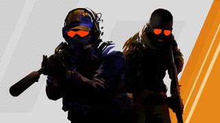
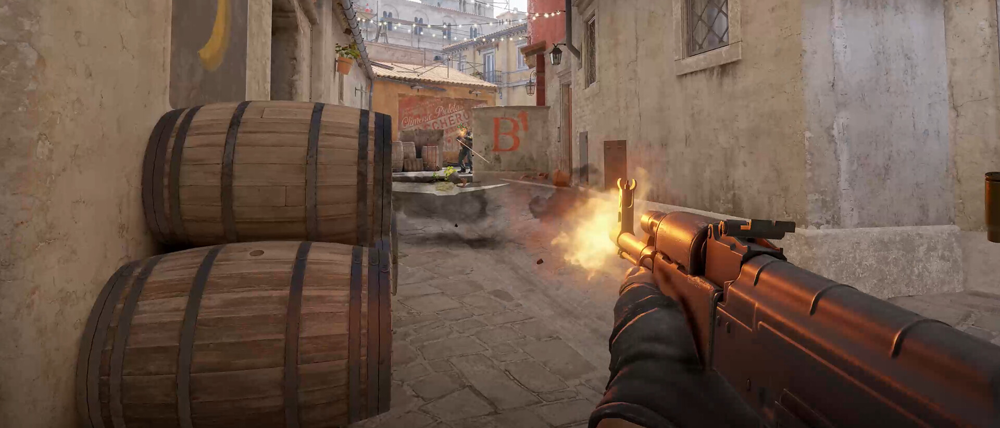
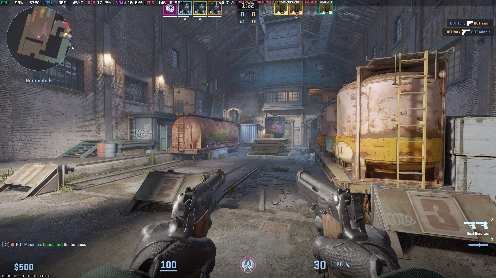
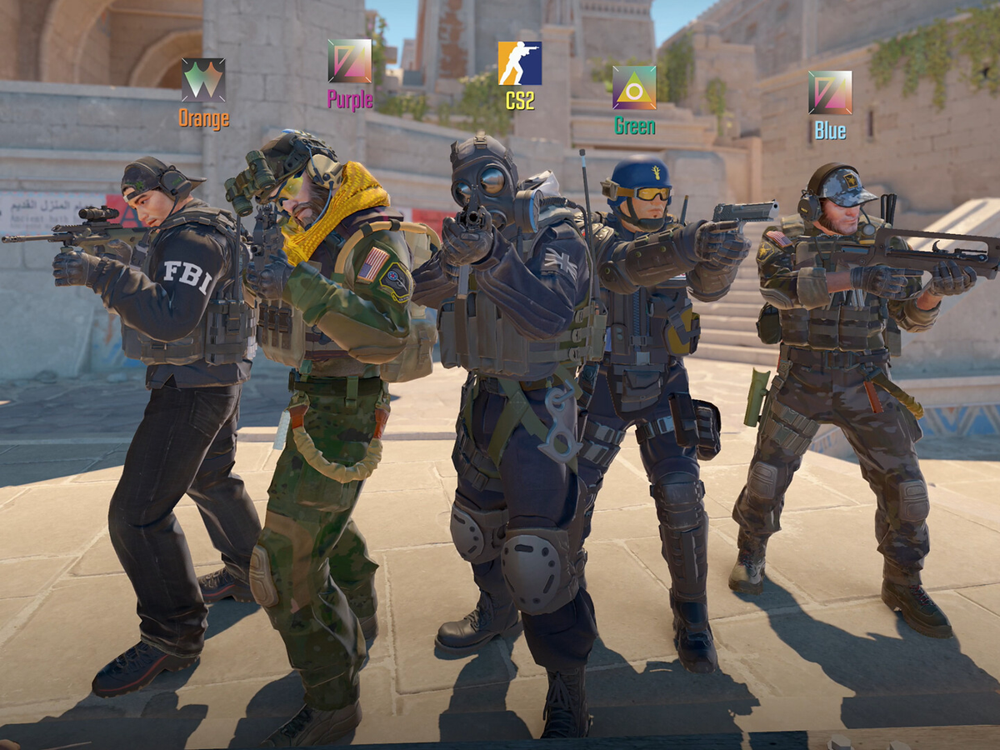

Overview
I have been playing Counter-Strike for a decade now, and it never fails to capture my attention and sate my competitive drive. I love playing with my friends and in serious teams alike.
Why I Love This Game
- Simple but hard to master mechanics.
- An incredibly high skill ceiling that only few players are able to reach, meaning there is always something to strive for.
- An incredible community that tenaciously creates content and improves the game.
Screenshots


